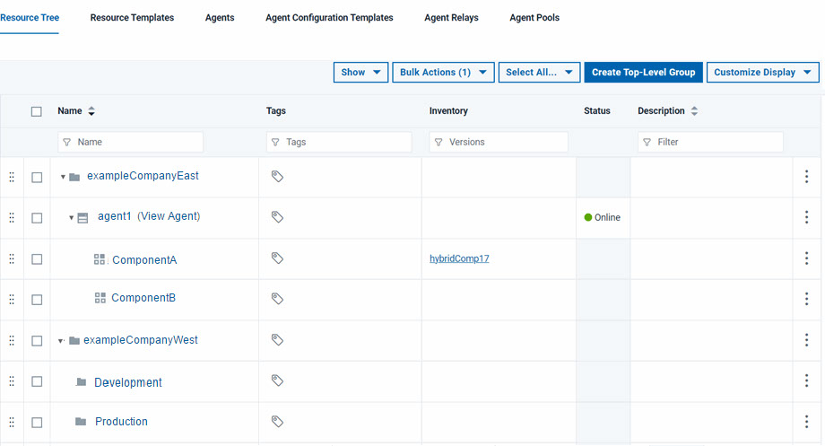

Resources
A resource is a logical deployment target that typically resolves to an agent and a user-defined construct that is based on the architectural model of IBM DevOps Deploy (Deploy).
Resources aid bookkeeping; inventory is tracked for resources. Resources are created and managed through the user interface.
A resource can represent an agent, agent pool, component, or an organizational entity that is used to group other resources. A component-type resource can point directly to the agent or agent pool that deploys it, or point to another resource in a hierarchical chain of resources. If a resource is part of a hierarchy, it delegates its automation, if any, up the chain until it finds an agent.
A resource represents a deployment target, such as a physical server, virtual machine, database, or Java™ Platform, Enterprise Edition container. Components are deployed to resources by agents (which are physical processes). Resources generally are hosted on the same host where its managing agent runs. A host can have more than one resource. If an agent is configured to handle multiple resources, a separate agent process runs for each one.
A resource can represent a physical server, which is the simplest configuration, or a specific target on a system, such as a database or server. So a host can have several resources represented on it. In addition, a resource can represent a process that is distributed over several physical or virtual machines. Finally, environments consist of resources.
To run a deployment, at least one resource must be defined and (usually) at least one agent. ("Usually" because trivial deployments can be done without an agent.) Typically, each host in a participating environment has an agent running on it to handle the resources that are located there.
A proxy resource is a resource that is effected by an agent on a host other than the one where the resource is located. If an agent does not require direct interaction with the file system or with process management on the host, a proxy resource can be used. When a deployment must interact with a service that is exposed on the network (a database or Java Platform, Enterprise Edition server, for instance), the interaction can happen from any server that has access to the networked service.
A group-type resource can represent any logical collection of resources.
In the following illustration, the top-level resource, exampleCompanyEast,
represents a data center that contains the Development subresource
(which represents an environment). In this instance, the exampleCompanyEast resource
does not point to any higher level resource. The resource ComponentA represents
a component, and delegates its automation up the chain until it reaches
the agent1 resource, which represents an agent. In
order for an agent to be invoked, at least one resource must be defined
for it.
Resources are created on the Resources page, which displays resources in a hierarchical tree structure. By displaying all resources across all environments, the Resources page provides a single place to see your entire infrastructure. Note: Resource names are limited to 255 characters.
The hierarchical structure is used wherever resources are used
and not just on the Resources page, such as when
assigning resources to environments. The hierarchical model is especially
effective when several logical deployment targets reside on the same
machine. In the accompanying illustration, the resources ComponentA and ComponentB could
represent application servers on the same machine where the agent agent1 is
located. Both can be individually targeted for deployment.
Selecting a resource selects every resource below it, if any, in
the hierarchy; for example, deleting or moving the agent1 resource
deletes or moves the ComponentA and ComponentB resources
as well.

Whether you need one or multiple resources per environment is determined by your current infrastructure, deployment procedures, and other requirements. Many Deploy users have significant differences among environments. Whatever your structure, the Resources page displays the entire infrastructure across all environments.
If you are using IBM® WebSphere® Application Server, you can import information from cells as resources; see Importing resources from WebSphere Application Server.
The resource tree
All of the resources on the Deploy server are organized into the resource tree. Top-level resource groups contain resources and other resource groups, and so on. Therefore, to refer to a resource, you must specify its path on the resource tree. For example, if an agent resource that is namedAgent1 is
contained in the group /Agents, you can refer to the agent resource by the path
/Agents/Agent1.Resource groups
A resource group is a logical collection of resources. Resource groups enable collections of resources to be easily reused. Resource groups can manage multi-tenant scenarios, for example, in which several servers share resources.